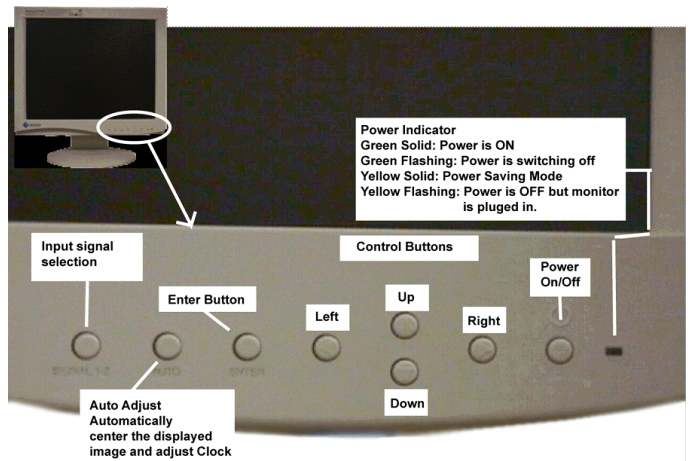
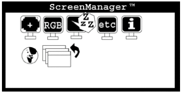
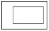
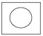
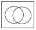
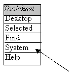

Operating Documentation
Direction 5133315-3, Rev# 14
Signa EXCITE HD 1.5T Service Methods
Module Version 1.0, Version Date 5/3/07
Operating Documentation |
The Auto Adjust procedure done in Section 4 takes care of these for you. All other values in the Screen Manager should stay at the default values except Contrast and Display.
Use this appendix only if you see problems with Focus, screen position relative to monitor mask or phase problems (horizontal bars sweeping through the LCD). Or any vertical problems. If there are no problems with these items, skip this section and proceed to Section 7.
The functions of the controls on the front of the monitor are shown in Illustration 1.
Open the Screen Manager by pressing the Enter button.
Screen Manager consists of a main menu and six sub menus. Enter the desired sub-menu by selecting the Icon pressing the Arrows to the desired section. Table 1 gives a brief description of each menu item.
Illustration 1: DISPLAY OPERATION

Illustration 2: SCREEN MANAGER

Table 1: SCREEN MANAGER ICON DEFINITIONS
| Icon | Function | Comments |
 | Screen | The screen function is used to manually adjust frequency, image position, resolution, contrast and brightness. Only contract and brightness are adjusted to 80 percent for Signa applications. Other features are adjusted using the monitors auto adjust button on the front of the monitor. |
 | Color | This selections if used to make fine adjustments to the display color of the monitor. These adjustments should be left at the default for Signa applications |
 | Power Manager | Used to setup the power management features of the monitor. These adjustments should be left at the default for Signa applications. |
 | Others | Allows adjustments to screen size, border intensity, input priority, power down timer, monitor beeps and if necessary allows resetting the monitor to factory setting. These adjustments should be left at the default for Signa applications. |
 | Information | This menu shows the current ScreenManager settings. No adjustments are made here. |
 | Language | Used to set the language the monitor menu will display in. This only effects the ScreenManager menus and has no effect on display data and text being sent from the host computer. |
 | Exit | Click this Icon to exit ScreenManager. |
Adjust Contrast and Brightness
Image Adjust 
Clock Adjustment 
Phase Adjustment 
The Screen Manager Window will disappear in 45 seconds unless you select a sub-menu using the appropriate arrow button. If necessary, push the Enter button on the monitor to display again.
Select the Screen menu.
If you observe vertical bars or non-linearity's in the pattern, select the Clock adjustment function to reduce the vertical distortion on the monitor. Use the Right and Left Arrow buttons to eliminate this problem.
If you observe horizontal bars or non-linearity's in the pattern, select the Phase adjustment function to reduce the vertical distortion on the monitor. Use the Right and Left Arrow buttons to eliminate this problem.
Press the Enter button to memorize both the Clock and the Phase setting.
If the screen position needs to be aligned, select the Position icon and push enter button. Adjust the image position using the controls to align the screen.
Adjustment markers will appear. Use the arrow buttons to align the screen to the adjustment markers.
Press the Enter button to memorize both the Position settings.
Press the Resolution button and select the desired resolution. 1280 X 1024
| NOTE: | 75 represents 75Hz. This is the maximum frequency rate that this setting can use. The Display Controller of the system will be should set at 50Hz, which is the the optimum setting to maximize image display (Refer to Section 6). |
Press enter button to memorize the setting.
Select Brightness/Contrast icon.
Push the Auto Adjustment button and the Contrast and Brightness adjustment will be automatically adjusted. The Screen blanks momentarily as it adjusts to the maximum contrast value.
Adjust the brightness to the desired level.
Push the enter button to save the adjusted settings.
Color Adjustment should be set to MODE 1.
Gain Adjustment:
Before setting the Gain adjustment always start by using the "Reset" button to set the gains to the default value.
Set all gains at 100%.
Power-Saving Setup- This should stay at the default setting.
All other setting should remain in the default position.
Use the Return button to go back to the Main Screen Manager Window.
To SAVE all values entered and EXIT, Select the Exit Icon or press the enter button twice.
| NOTE: | Adjustment information is not lost when the power is removed from the monitor. |
This section is normally not needed. However, if you cannot adjust the monitor satisfactorily, with the front panel buttons and ScreenManager, you may want to try the adjustments described in this section.
From the Tools Menu on Signa Open a C-Shell.
Type: [toolchest&]. A pulldown menu as in Illustration 3 will appear in the upper left-hand portion on the display.
Select [System] with the Right mouse button.
Select [Confidence Tests] from the extended menu. A “confidence test” pop-pup will appear after a few seconds.
From the “confidence test” pop-up, select the [Monitor] Icon. A monitor calibration menu will appear on the screen.
Select [Focus] from the "Test Options" menu by using the <Tab> key.
Put the mouse pointer on the [Test Options] Menu. Click the Middle mouse button to toggle (Hide) the "Test Options" menu.
Push the auto-adjustment button on the front of the monitor. This should setup Focus, Horizontal, Vertical Centering, sync to the proper Clock Rate and monitor Phase.
Observe the test pattern displayed, it should now be centered and in focus. This should be all that is necessary to adjust the display controllers' output to match the LCD monitor.
Toggle the [monitor calibration] toolbar back on by selecting the middle mouse. Select the [grayscale] menu option.
Toggle the menu back off by selecting the middle mouse again.
Illustration 3: TOOLCHEST MENU

This alternative procedure uses the Monitor Calibration tools and patterns. Steps 1 through 4 should be done while observing the image for crisp lines, overall uniformity of pattern, and to setup the LCD monitor so it is at its brightest level without "Blooming the image or adding distortions." The intent of this section is to achieve the best image appearance you can with the LCD. At the completion of this section you should check the display against industry standard SMPTE pattern. (See Section 7- LCD CALIBRATION FOR OPTIMUM IMAGE VIEWING)
Select [Contrast/Brightness] button and push enter.
Adjust brightness to maximum level 100%.
Look at the monitor and adjust the Contrast and Brightness to optimize the test clarity of the test pattern. This is an iterative process between both settings.
When satisfied with the displays' contrast and brightness setting is properly achieved, push the enter button to save the adjusted Contrast/Brightness settings.
Exit the Monitor Calibration by selecting [Quit].
Select [File] on the Confidence Test Window and choose [Exit].
Click on the word [Toolchest] at the top of the menu with the Right mouse button and select [Close].
Exit the C-Shell by typing: Exit<Enter>